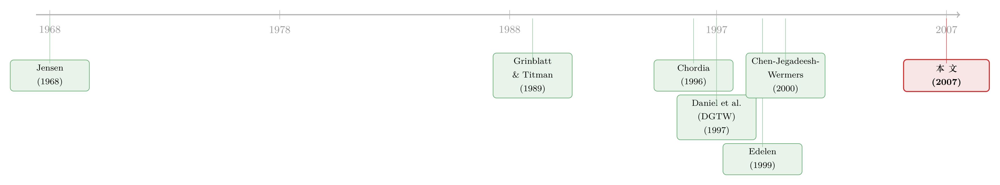

同一只基金，买进同一批股票，为什么有时跑赢、有时跑输？
本文读的是 Alexander, Cici & Gibson (2007, Review of Financial Studies)：他们把基金的每一笔交易按「动机」拆开来看。当基金经理在投资者大幅赎回（outflow）时还逆势买进股票，这种「纯估值驱动」的买入在随后一年跑赢基准 2.79%；可一旦是被大量申购（inflow）逼着把闲钱投出去，同样是买，超额收益就坍缩成不显著的 -0.41%。一句话——评判一笔交易好不好，先得问它为什么发生。
1 引言：一个被「平均」掩盖掉的问题
关于「基金经理到底会不会选股」这个老问题，文献已经吵了快四十年。早期的人看基金净值收益（Jensen, 1968），后来的人觉得收益噪声太大、检验功效（power）太弱，于是转去看持仓（holdings），再后来又转去看交易（trades）。逻辑一层比一层精细：持仓是过去决策的沉淀，而交易才反映当下的判断。
但这里始终藏着一个谁都绕不开、却又少有人正面处理的麻烦：基金经理买一只股票，并不总是因为他看好它。
开放式基金（open-end fund）这个结构本身，就逼着经理去做很多「言不由衷」的交易。投资者今天大笔申购，钱就躺在账上，业绩却是拿去跟股票指数比的——他不敢一直拿着现金，只好把这笔闲钱投出去，哪怕当下没有一只股票让他真正心动。反过来，投资者大笔赎回，他又得忍痛卖掉一些其实还想继续持有的好股票来凑现金。除此之外，还有为了少分红、年底前卖掉亏损股的税务动机（tax motive），以及为了报表好看、临近披露日去追买近期赢家的「橱窗粉饰」（window dressing）。
于是问题就来了：如果你把一只基金所有的买入混在一起算平均超额收益，你算出来的，其实是「真心看好的买」和「被迫投钱的买」搅在一起的一锅粥。动机不同的交易被一视同仁地平均，选股能力自然被稀释了。
这篇文章干的事，说穿了就一句话：想办法把「估值驱动」的交易和「流动性驱动」的交易分开，然后分别看它们事后表现如何。
2 识别策略：怎样从交易里「读」出动机？
我们当然看不到基金经理脑子里在想什么。作者的巧思在于——用「资金流的方向」和「交易的规模」这两个可观测的东西，去给每一笔交易的动机打分。
先讲直觉。设想一只基金某个季度遭遇了大笔赎回，按理说它该卖股票筹钱才对；可它偏偏还在买。这说明什么？说明经理认定这些股票被严重低估，低估到值得他顶着筹钱压力也要买。这种「逆着资金流」的大额买入，几乎必然是估值驱动的。 反过来，一只基金正被投资者大笔申购、钱多得花不完，它这时候的买入里，掺了大量「不投不行」的流动性驱动成分。
把这个直觉做成可计算的指标，就是文中的 BF（买方资金流指标）和 SF（卖方资金流指标）。它们建立在一个先估出来的季度资金流之上——月度净流量按下式估计（假设资金在月末进出）：
$$ FLOW^i_t = TNA^i_t - TNA^i_{t-1}\,(1 + RETURN^i_t) $$
其中 \(TNA^i_t\) 是份额类别 \(i\) 在 \(t\) 月末的总净资产（total net assets），\(RETURN^i_t\) 是当月收益；把同一基金各份额类别相加、再把一个季度的三个月加总，就得到季度资金流。有了它，买方和卖方指标定义为：
$$ BF^i_t = \frac{BUYS^i_t - FLOW^i_t}{TNA^i_{t-1}} $$
$$ SF^i_t = \frac{SELLS^i_t + FLOW^i_t}{TNA^i_{t-1}} $$
BUYS 是该季度所有增持股票按均价折算的总买入额，SELLS 是所有减持的总卖出额。读一下这两个式子的符号你就懂了：BF 把「买得多、同时还在大幅流出」的组合推到最高分位 BF1（最像估值驱动），把「买得少、却在大幅流入」的推到最低分位 BF5（最像流动性驱动）。SF 则对称地处理卖出。
论文里给了一个干净的算例：一只期初 1 亿美元的基金，季度 \(t_1\) 流出 500 万、却买了 200 万股票，BF = [2-(-5)]/100 = 0.07；季度 \(t_2\) 流入 500 万、买了 300 万，BF = (3-5)/100 = -0.02。同样是「买」，前者得高分、后者得低分——这正是我们想要的「动机温度计」。
但只看资金流还不够。作者又加了第二把尺子：交易规模（trade size）。逻辑同样朴素——真心认定一只股票被低估的经理，会在这一只上重仓下注；而只是为了消化流动性的经理，会把一笔笔小单子摊到一大堆股票上。于是大额交易（规模分位 TS1）更像估值驱动，小额交易（TS5）更像流动性驱动。
两把尺子一交叉，四个角落就有了清晰的含义：
BF1/TS1：大笔买入 + 重度流出 = 最纯的估值驱动买入；BF5/TS5：小笔买入 + 重度流入 = 最纯的流动性驱动买入。
卖出那边，把资金流方向反过来，对称成立。
这套排序还有一个常被忽视、却很关键的副产品：因为是对每只基金各自的时间序列单独排序，它天然打断了数据里可能存在的序列交易模式（如机构为隐藏身份而拆单的 stealth trading，Chakravarty, 2001）和横截面交易模式（如同一基金家族共用内部研究，Elton, Gruber & Blake, 2004）。换句话说，BF1 组合里的那些季度，并不是从某几个共同的「大流出季」里系统性抽出来的——作者验证了 BF1/BF5/SF1/SF5 在各季度的占比中位数分别是 18.3%、22.7%、21.4%、20.5%，相当均匀。
3 数据
- 持仓数据：1980 年 1 月–2003 年 12 月的 Thomson/CDA 美国股票型基金持仓，用 WRDS 的
MFLINK与 CRSP 共同基金库匹配；两库都无幸存者偏差。筛选后得到1,400只主动管理的股票型基金（投资目标为 aggressive growth / growth / growth and income）。 - 观测单位：基金—季度。交易由相邻两季持仓变化推算（充分调整了拆股）。
- 基准：照搬 Daniel, Grinblatt, Titman & Wermers (1997, 即 DGTW) 的做法，按市值、账面市值比、过去 12 个月动量构造
125个特征基准组合，每只股票的超额收益 = 自身买入持有收益 − 对应基准组合收益。
为剔除 IPO 优先配售带来的污染（Gasper, Massa & Matos, 2005；Reuter, 2006），只保留已上市满 6 个月的股票。税务与橱窗粉饰多发生在四季度，所以所有结果都同时报告「剔除四季度」与「含四季度」两个版本。
4 主要结果：动机，真的决定一切
先看买入这一边（论文表 2）。
第一颗钉子，钉在左上角。 BF1/TS1——最纯的估值驱动买入——在随后一年取得了 2.79% 的基准调整收益，t 值 6.51，干净利落地显著。这说明：当经理真心看好、并且用真金白银下重注时，他确实能跑赢市场。
第二颗钉子，是那条单调下滑的斜坡。 从 BF1/TS1 出发，沿着行往下、沿着列往右走，超额收益一路递减——因为估值驱动的成分在减少、流动性驱动的成分在增加。资金流维度上，高流出与高流入分位之差 BF1−BF5 是 2.81%（t = 7.29），稳稳显著。
但真正点题的，是右下角。 BF5/TS5——最纯的流动性驱动买入——的超额收益只有不显著的 -0.41%。同样是买股票，仅仅因为动机从「我看好」变成了「我不得不投」，超额收益就从 +2.79% 坍缩到 -0.41%。两个极端组合之差 BF1/TS1 − BF5/TS5 = 3.20%（t = 5.22），这是全文最有力的一个检验：它直接告诉你，动机不是细枝末节，而是几乎全部。
卖出那边的故事类似、但更微妙，也更有意思。估值驱动的卖出（SF1，大笔卖 + 重度流入：经理趁手头宽裕，把真心不看好的股票出掉）随后一年的超额收益是不显著的 -0.66%——卖对了，被卖掉的股票确实没怎么涨。于是买卖之差高达 3.45%，远大于不分动机时 1.06% 的无条件买卖价差。
最反直觉的一笔，藏在 SF1/TS5 这类流动性驱动的卖出里（小笔卖 + 重度流出：经理为筹现金，被迫割掉一些其实还想留着的好股票）。它们随后竟然跑赢基准 1.55%。乍看奇怪，细想却完全自洽：如果经理基于估值本想继续持有，只是被赎回逼着卖，那么这些「忍痛割爱」的股票事后表现好，恰恰是选股能力的又一个侧证。
把这几块拼起来，一个统一的图景就出来了：无论买还是卖，只要交易是估值驱动的，它就站在选股能力的一边；只要是流动性驱动的，业绩就被拖累。 这给 Edelen (1999) 那个著名发现——资金流与基金收益显著负相关——提供了直接的微观证据：拖累业绩的，正是那些被资金流逼出来的流动性交易。
5 文献脉络
把这篇文章放回它所在的那条河流里，脉络其实很清晰。
源头是「基金经理会不会选股」。 Jensen (1968) 用净值收益开了第一枪，结论偏悲观。但收益噪声太大，检验功效不足，于是后人一路提升「显微镜」的倍率：Grinblatt & Titman (1989, 1993) 转向用持仓来度量业绩，Daniel et al. (1997) 给出了至今仍是行业标准的 DGTW 特征基准，Wermers (1999, 2000) 把基金业绩拆解到选股、风格、成本各个零件。
接着，一个自然的问题是：持仓够不够「新鲜」？ Chen, Jegadeesh & Wermers (2000) 给出了关键一跃——他们论证「看交易比看持仓功效更高」，因为交易反映当下信念、持仓只是过去决策的残影；并发现被基金广泛持有的股票并不跑赢，但基金「买的」确实比「卖的」表现好。

与此同时，另一条支流在追问基金结构的成本。 Chordia (1996)、Edelen (1999)、Nanda, Narayanan & Warther (2000) 都指出，开放式结构在给投资者提供低成本流动性的同时，把一笔沉重的间接交易成本压在了基金身上——Edelen (1999) 更是把「资金流与基金收益负相关」直接归因于流动性驱动交易。
这篇 2007 年的文章，正好坐在这两条支流的交汇处。 它接过 Chen et al. (2000) 「看交易」的方法论，又借了 Edelen (1999) 「资金流是成本之源」的洞察，把两者合成一把更利的刀：用资金流和交易规模给每笔交易标注动机，从而把选股能力的检验做得比前人都更干净、更有功效。它对前一支流的贡献，是证明了「看交易」时还得「看动机」；对后一支流的贡献，是给「流动性交易拖累业绩」补上了直接证据。
6 评论与延伸（Q&A + 研究方向）
(a) 几个可能的疑问
Q：BF/SF 真的在度量「动机」，还是只是换了个名字的资金流？
它度量的是动机的概率，不是动机本身。作者很诚实：
BF1/TS1只是「估值驱动占比最高」的组合，里面仍混有别的交易，只是比例最低。但正因为是「最高占比 vs 最低占比」的对照，两极之差3.20%才有力——它衡量的是动机成分的边际变化带来多大业绩差异，而非给单笔交易贴一个非黑即白的标签。
Q：为什么用实际资金流，而不是「意外资金流」（unexpected flow）？意外的那部分不是更外生吗？
理论上是。意外资金流确实能给出更精准的动机分类。但作者试了——用意外资金流（以滞后流量、滞后收益、季度哑变量建模）的结果，买入端略弱、卖出端明显更弱。原因可能是季度数据太粗、预期流量估计噪声太大，也可能是经理会提前为预期流量调仓。所以他们退而用实际流量，并坦承这是数据频率所限的折中。
Q：会不会其实是动量？BF1 的股票恰好是近期跌过的便宜货，捡的是反转收益？
DGTW 基准已经按「过去 12 个月动量」分了组，超额收益是相对同动量、同市值、同账面市值比的股票算的。所以这
2.79%不是动量、不是规模、也不是价值，是这三者之外的东西。
Q：估值驱动的卖出只有不显著的 -0.66%，是不是说明经理「会买不会卖」？
买卖不对称确实存在，作者也承认卖方的模式整体更弱。一个合理的解释是：卖出的动机比买入更杂（税务、橱窗粉饰、赎回筹现金都集中在卖方），动机信号更难提纯。但别忘了那个反直觉的
+1.55%——流动性驱动的卖出反而跑赢，恰恰说明经理在卖方也有判断力，只是被迫卖的时候判断力是「逆着」业绩显示出来的。
Q：四季度的税务和橱窗粉饰交易，会不会把结果做出来？
不会。所有结果都报了「剔除四季度」和「含四季度」两版，主结论在两版里都成立。这正是为了把税务、橱窗粉饰这两类四季度高发的动机隔离开。
Q：对实务有什么用？比如能不能照着 BF1/TS1 抄作业？
直接抄不行——这是基于季度末才披露的持仓事后推算的，你拿到信号时早已过期。它真正的含义是评价层面的：用基金的平均业绩去判断经理能力是有偏的，因为里面掺了大量身不由己的流动性交易。这也反过来说明，那些结构上更少需要流动性交易的产品（如封闭式、低赎回压力的安排）在「释放选股能力」上可能更有优势。
(b) 几个可能的研究问题与提案
1. 把这套「动机分解」搬到公司债基金上。
【经济故事】公司债流动性远比股票差，基金被赎回逼着「火线甩卖」（fire sale）的代价更高，估值驱动与流动性驱动交易的业绩裂口可能比股票更宽。这恰好接上了关于债券基金资产甩卖的讨论（可参见《同一个发行人的两只债券，戳破了「火线甩卖」的幻觉》）。
【可行性】中。需要 TRACE 成交价 + 基金持仓（Morningstar/eMAXX）+ 资金流；难点在债券基准（没有现成的 DGTW），得自建按评级×久期的特征基准。识别逻辑可直接平移 BF/SF。
2. 外资持有人的资金流，是不是另一种「被迫交易」的来源？ 【经济故事】跨境资金在风险事件中往往整体进退（risk-on/risk-off），被外资重仓的标的，其交易里「身不由己」的成分可能系统性更高。若能把外资 vs 内资的资金流分开，或可识别出一类专属于外资的流动性驱动价格压力。 【可行性】中。需要按投资者国籍拆分的持仓/流量数据（如 EPFR 基金层面流量、或各国托管数据），识别上可借本文「逆流交易 = 估值驱动」的思路。
3. 用高频持仓重做「意外资金流」版本。 【经济故事】本文最大的遗憾是季度数据太粗、意外流量估不准。今天部分基金有月度甚至更高频的流量与持仓，正好补上这块短板，检验「动机—业绩」关系在更精准的动机切分下是否更强。 【可行性】高（针对有高频披露的子样本）。数据可得性是唯一瓶颈；方法现成。
4. 流动性驱动交易，会不会在市场层面造成可预测的价格压力？
【经济故事】如果大量基金在同一时点被同向资金流逼着同向交易，本文打断的「横截面共性」在加总后可能重新浮现为一种系统性的需求冲击，进而产生短期反转。
【可行性】中。需把 BF5/SF5 类交易在个股层面加总，构造「流动性驱动净买压」，再看其对随后收益的预测力；与已有的需求—价格文献可对接。
7 我的判断
这篇文章的贡献，不在于发明了什么花哨的计量，而在于问对了一个被「平均」长期掩盖的问题：评价一笔交易的好坏，必须先把它的动机剥出来。BF/SF 加交易规模这套双重排序，简单、透明、可复制，而且那个「单独按基金时间序列排序、从而打断序列与横截面共性」的副产品相当漂亮——它让两极对照的 3.20% 价差很难用别的混杂因素解释掉。结论本身也极有说服力：同一只基金、同样是买股票，仅凭动机不同，事后一年的超额收益就能从 +2.79% 跌到 -0.41%。
但识别上仍有两处我会追问。其一，动机的标注终究是概率性的、间接的。 BF1/TS1 里依然混着非估值交易，作者只能论证「占比更高」，无法证明「就是」。如果不同分位里混入的「杂质」种类系统性不同（比如高流出季更容易撞上市场整体的反转），纯净度的差异就可能部分污染那个 3.20%。其二，季度频率是硬伤——作者自己也承认，用意外资金流本该更干净，却因数据太粗而效果更弱。这意味着我们今天读到的，很可能是「动机—业绩」关系被噪声低估后的下界。
接下来我最想看到的，是把这把刀磨得更利：用更高频的持仓与流量重估意外资金流版本，看裂口会不会进一步拉大；以及把它搬到流动性更脆弱的公司债市场，去检验「被迫交易的代价随市场流动性恶化而放大」这个本文逻辑上呼之欲出、却没能直接检验的推断。
参考文献
- Chakravarty, S. (2001). Stealth Trading: Which Traders' Trades Move Stock Prices? Journal of Financial Economics 61, 289–307.
- Chen, H., N. Jegadeesh, and R. Wermers (2000). The Value of Active Mutual Fund Management: An Examination of the Stockholdings and Trades of Fund Managers. Journal of Financial and Quantitative Analysis 35, 343–368.
- Chordia, T. (1996). The Structure of Mutual Fund Charges. Journal of Financial Economics 41, 3–39.
- Daniel, K., M. Grinblatt, S. Titman, and R. Wermers (1997). Measuring Mutual Fund Performance with Characteristic-Based Benchmarks. Journal of Finance 52, 1035–1058.
- Edelen, R. M. (1999). Investor Flows and the Assessed Performance of Open-End Mutual Funds. Journal of Financial Economics 53, 439–466.
- Elton, E. J., M. J. Gruber, and C. R. Blake (2004). The Adequacy of Investment Choices Offered by 401K Plans. Working paper, New York University.
- Gasper, J., M. Massa, and P. Matos (2005). Favoritism in Mutual Fund Families? Evidence on Strategic Cross-Fund Subsidization. Journal of Finance 61, 73–104.
- Grinblatt, M., and S. Titman (1989). Mutual Fund Performance: An Analysis of Quarterly Portfolio Holdings. Journal of Business 62, 394–415.
- Grinblatt, M., and S. Titman (1993). Performance Measurement without Benchmarks: An Examination of Mutual Fund Returns. Journal of Business 66, 47–68.
- Jensen, M. C. (1968). The Performance of Mutual Funds in the Period 1945–1964. Journal of Finance 23, 389–416.
- Nanda, V., M. P. Narayanan, and V. A. Warther (2000). Liquidity, Investment Ability, and Mutual Fund Structure. Journal of Financial Economics 57, 417–443.
- Reuter, J. M. (forthcoming). Are IPO Allocations for Sale? Evidence from Mutual Funds. Journal of Finance.
- Wermers, R. (1999). Mutual Fund Herding and the Impact on Stock Prices. Journal of Finance 54, 581–622.
- Wermers, R. (2000). Mutual Fund Performance: An Empirical Decomposition into Stock-Picking Talent, Style, Transaction Costs, and Expenses. Journal of Finance 55, 1655–1695.